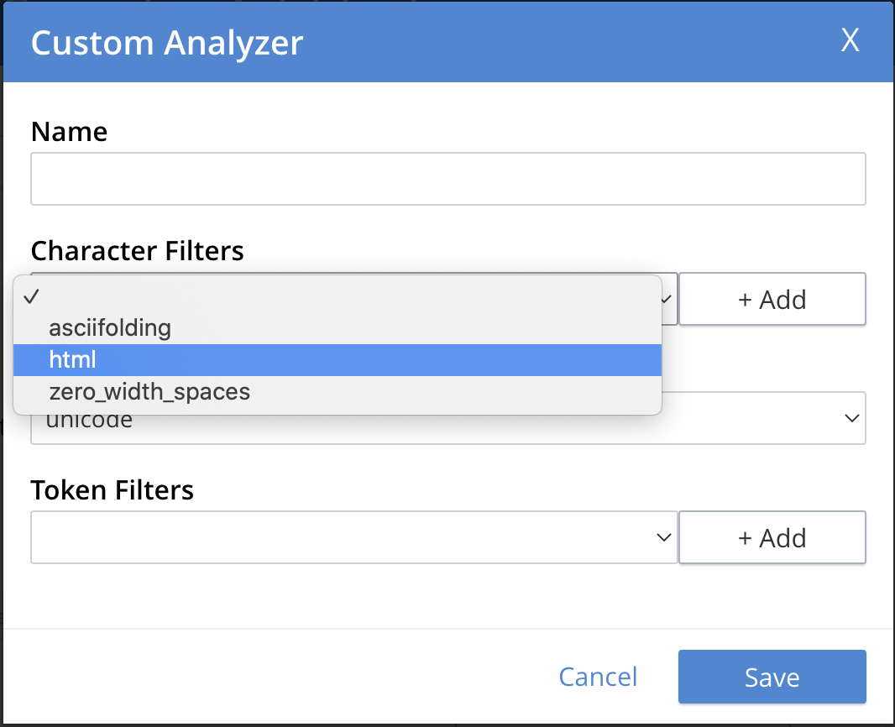
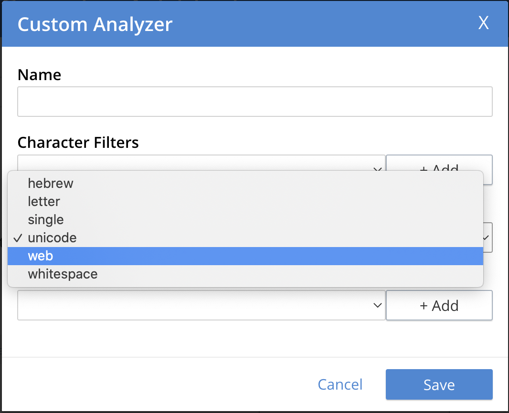
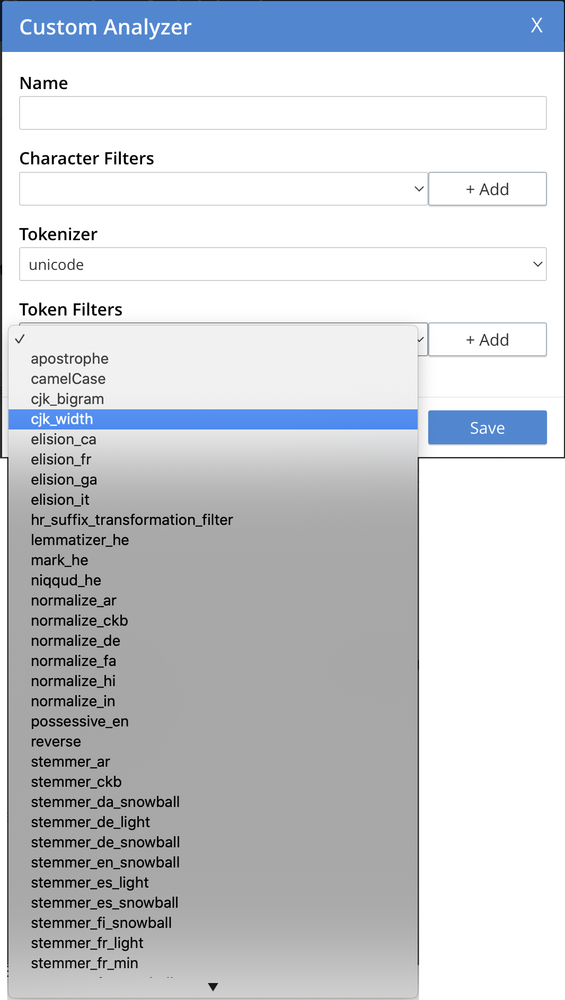
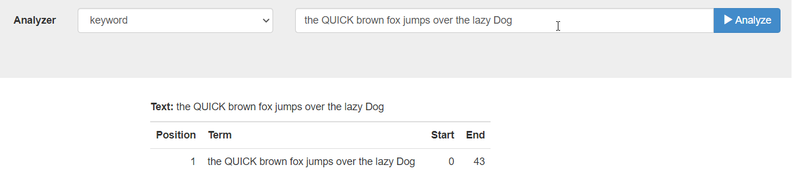
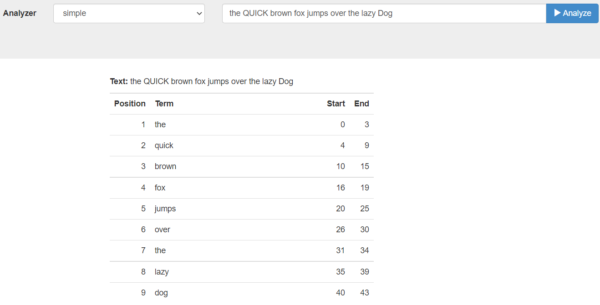
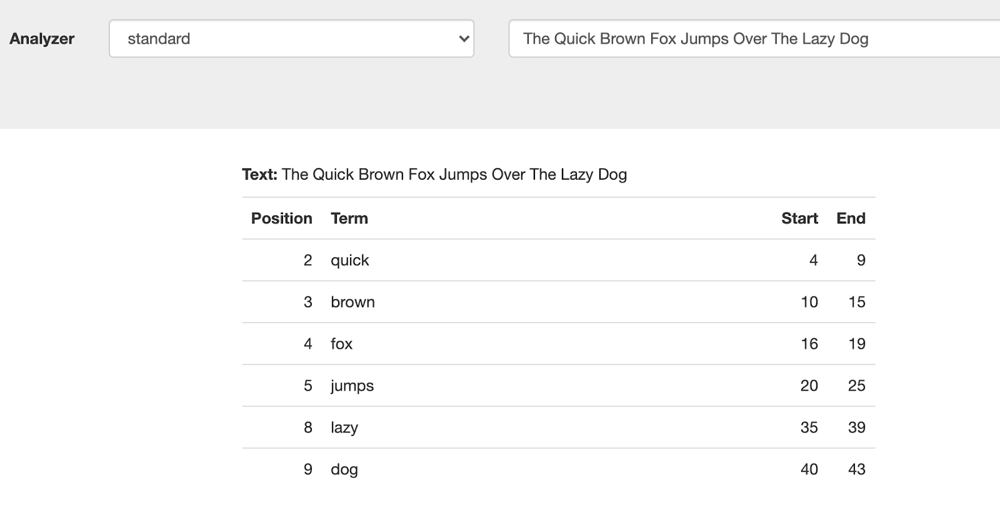
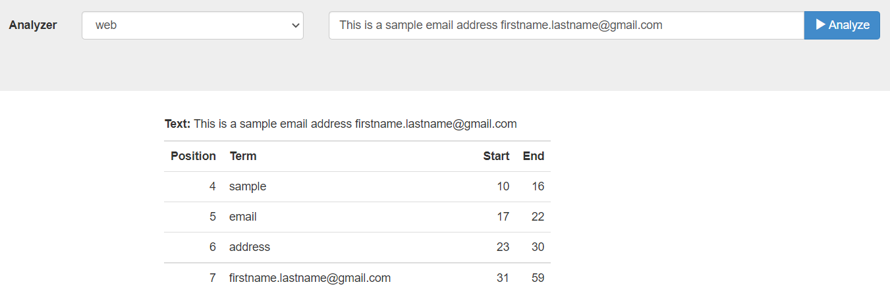

Understanding Analyzers
Analyzers increase search-awareness by transforming input text into token-streams, which permit the management of richer and more finely controlled forms of text-matching. An analyzer consists of modules, each of which performs a particular, sequenced role in the transformation.
Principles of Text-Analysis
Analyzers pre-process input-text submitted for Full Text Search; typically, by removing characters that might prohibit certain match-options.
The analysis is performed on document-contents when indexes are created and is also performed on the input-text submitted for a search. The benefit of analysis is often referred to as language awareness.
For example, if the input-text for a search is enjoyed staying here, and the document-content contains the phrase many enjoyable activities, the dictionary-based words do not permit a match.
However, by using an analyzer that (by means of its inner Token Filter component) stems words, the input-text yields the tokens enjoy, stay, and here; while the document-content yields the tokens enjoy and activ.
By means of the common token enjoy, this permits a match between enjoyed and enjoyable.
Since different analyzers pre-process text in different ways, effective Full Text Search depends on the right choice of the analyzer, for the type of matches that are desired.
Couchbase Full Text Search provides a number of pre-constructed analyzers that can be used with Full Text Indexes. Additionally, analyzers can be custom-created by means of the Couchbase Web Console. The remainder of this page explains the architecture of analyzers and describes the modular components that Couchbase Full Text Search makes available for custom-creation. It also lists the pre-constructed analyzers that are available and describes the modules that they contain.
For examples of both selecting and custom-creating analyzers by means of the Couchbase Web Console.
Analyzer Architecture
Analyzers are built from modular components:
-
Character Filters remove undesirable characters from input: for example, the
htmlcharacter filter removes HTML tags, and indexes HTML text-content alone. -
Tokenizers split input-strings into individual tokens, which together are made into a token stream. The nature of the decision-making whereby splits are made, differs across tokenizers.
-
Token Filters are chained together, with each performing additional post-processing on each token in the stream provided by the tokenizer. This may include reducing tokens to the stems of the dictionary-based words from which they were derived, removing any remaining punctuation from tokens, and removing certain tokens deemed unnecessary.
Each component-type is described in more detail below. You can use these components to create custom analyzers from the Couchbase Web Console.
| If you have configured an analyzer for your field, you cannot specify any other analyzer for the field in the search request. However, if you do not specify any analyzer in your search query, the query will automatically choose the analyzer that was used for indexing. |
Character Filters
Character Filters remove undesirable characters.
The following filters are available:
-
asciifolding: Converts characters that are in the first 127 ASCII characters (
basic latinunicode block) into their ASCII equivalents. -
html: Removes html elements such as
<p>. -
regexp: Uses a regular expression to match characters that should be replaced with the specified replacement string.
-
zero_width_spaces: Substitutes a regular space-character for each zero-width non-joiner space.
Tokenizers
Tokenizers split input-strings into individual tokens: characters likely to prohibit certain kinds of matching (for example, spaces or commas) are omitted.
The tokens so created are then made into a token stream for the query.
The following tokenizers are available from the Couchbase Web Console:
-
Hebrew: Creates tokens by breaking input-text into subsets that consist of hebrew letters only: characters such as punctuation-marks and numbers are omitted. Couchbase Server 7.1.2
This does a restricted set of operations on the punctuations for example, it can’t combine the two geresh into a single gershayim (both of which are used as punctuations)
-
Letter: Creates tokens by breaking input-text into subsets that consist of letters only: characters such as punctuation-marks and numbers are omitted.
The creation of a token ends whenever a non-letter character is encountered. For example, the text
Reqmnt: 7-element phrasewould return the following tokens:Reqmnt,element, andphrase. -
Single: Creates a single token from the entirety of the input-text. For example, the text
in each placewould return the following token:in each place.This may be useful for handling URLs or email addresses, which can thus be prevented from being broken at punctuation or special-character boundaries. It may also be used to prevent multi-word phrases (for example, place names such as
Milton KeynesorSan Francisco) from being broken up due to whitespace; so that they become indexed as a single term. -
Unicode: Creates tokens by performing Unicode Text Segmentation on word-boundaries, using the segment library.
For examples, see Unicode Word Boundaries.
-
Web: It identifies email addresses, URLs, Twitter usernames and hashtags, and attempts to keep them intact, indexed as individual tokens.
-
Whitespace: Creates tokens by breaking input-text into subsets according to where whitespace occurs.
For example, the text
in each placewould return the following tokens:in,each, andplace.
Token Filters
Token Filters accept a token-stream provided by a tokenizer and make modifications to the tokens in the stream.
A frequently used form of token filtering is stemming; this reduces words to a base form that typically consists of the initial stem of the word (for example, play, which is the stem of player, playing, playable, and more).
With the stem used as the token, a wider variety of matches can be made (for example, the input-text player can be matched with the document-content playable).
The following kinds of token-filtering are supported by Couchbase Full Text Search:
-
apostrophe: Removes all characters after an apostrophe and the apostrophe itself. For example,
they’vebecomesthey. -
camelCase: Splits camelCase text to tokens.
-
dict_compound: Allows user-specification of a dictionary whose words can be combined into compound forms, and individually indexed.
-
edge_ngram: From each token, computes n-grams that are rooted either at the front or the back.
-
elision: Identifies and removes characters that prefix a term and are separated from it by an apostrophe.
For example, in French,
l’avionbecomesavion. -
mark_he: Marks the hebrew, non-hebrew and numeric tokens in the tokenstream. Couchbase Server 7.1.2
-
niqqud_he: Ensures that niqqudless spelling for the further hebrew analysis. Couchbase Server 7.1.2
-
lemmatizer_he: Lemmatizes/gets similar forms of the hebrew words, and if necessary handles spelling mistakes to a certain extent using yud and vav as part of tolerance process. Couchbase Server 7.1.2
-
keyword_marker: Identifies keywords and marks them as such. These keywords are then ignored by any downstream stemmer.
-
length: Removes tokens that are too short or too long for the stream.
-
to_lower: Converts all characters to lower case.
-
ngram: From each token, computes n-grams.
There are two parameters, which are the minimum and maximum n-gram length.
-
reverse: Simply reverses each token.
-
shingle: Computes multi-token shingles from the token stream.
For example, the token stream
the quick brown fox, when configured with a shingle minimum and a shingle maximum length of 2, produces the tokensthe quick,quick brown, andbrown fox. -
stemmer_porter: Transforms the token stream as per the porter stemming algorithm.
-
stemmer_snowball: Uses libstemmer to reduce tokens to word-stems.
-
stop_tokens: Removes from the stream tokens considered unnecessary for a Full Text Search. For example,
and,is, andthe. For example,HTMLbecomeshtml. -
truncate: Truncates each token to a maximum-permissible token-length.
-
normalize_unicode: Converts tokens into Unicode Normalization Form.
-
unique: Only indexes unique tokens during analysis.
| The token filters are frequently configured according to the special characteristics of individual languages. Couchbase Full Text Search provides multiple language-specific versions of the elision, normalize, stemmer, possessive, and stop token filters. |
The following table lists the specially supported languages for token filters.
| Name | Language |
|---|---|
ar |
Arabic |
bg |
Bulgarian |
ca |
Catalan |
cjk |
Chinese | Japanese | Korean |
ckb |
Kurdish |
da |
Danish |
de |
German |
el |
Greek |
en |
English |
es |
Spanish (Castilian) |
eu |
Basque |
fa |
Persian |
fi |
Finnish |
fr |
French |
ga |
Gaelic |
gl |
Spanish (Galician) |
he |
Hebrew Couchbase Server 7.1.2 |
hi |
Hindi |
hu |
Hungarian |
hr |
Croatian |
hy |
Armenian |
id, in |
Indonesian |
it |
Italian |
nl |
Dutch |
no |
Norwegian |
pt |
Portuguese |
ro |
Romanian |
ru |
Russian |
sv |
Swedish |
tr |
Turkish |
Creating Analyzers
Analyzers increase search-awareness by transforming input text into token-streams, which permit the management of richer and more finely controlled forms of text-matching.
An analyzer consists of modules, each of which performs a particular role in the transformation (for example, removing undesirable characters, transforming standard words into stemmed or otherwise modified forms, referred to as tokens, and performing miscellaneous post-processing activities).
For more information on analyzers, see Understanding Analyzers.
A default selection of analyzers is made available from the pull-down menu provided by the Type Mappings interface discussed above. Additional analyzers can be custom-created, by means of the Analyzers panel, which appears as follows:
To create a new analyzer, left-click on the + Add Analyzer button.
The Custom Analyzer dialog appears:
The dialog contains four interactive panels.
-
Name: A suitable, user-defined name for the analyzer.
-
Character Filters: One or more available character filters. (These strip out undesirable characters from input: for example, the
htmlcharacter filter removes HTML tags, and indexes HTML text-content alone.) To select from the list of available character filters, use the pull-down menu:Following addition of one character filter, to add another, left-click on the + Add button, to the right of the field.
For an explanation of character filters, see the section in Understanding Analyzers.
-
Tokenizer: One of the available tokenizers. (These split input-strings into individual tokens, which together are made into a token stream. Typically, a token is established for each word.) The default value is
unicode. To select from a list of all tokenizers available, use the pull-down menu:For more information on tokenizers, see the section in Understanding Analyzers.
-
Token Filter: One or more of the available token filters. (When specified, these are chained together, to perform additional post-processing on the token stream.) To select from the list of available filters, use the pull-down menu:
Following addition of one token filter, to add another, left-click on the + Add button, to the right of the field.
For more information on token filters, see the section in Understanding Analyzers.
When these fields have been appropriately completed, save by left-clicking on the Save button. On the Edit Index screen, the newly defined analyzer now appears in the Analyzers panel, with available options displayed for further editing, and deleting. For example:
Pre-Constructed Analyzers
The user can select several pre-constructed analyzers available in the Couchbase Web Console. Refer to Creating Indexes for more examples of selection see Creating Indexes.
The four basic pre-constructed analyzers are demonstrated below via an online tool https://bleveanalysis.couchbase.com/analysis:
-
Keyword: This analyzer creates a single token representing the entire input. It forces exact matches and preserves characters such as spaces.
For example, the text “the QUICK brown fox jumps over the lazy Dog” phrase returns the following tokens:
 -
Simple: The simple analyzer uses the Letter tokenizer, which keeps letters only. The Letter tokenizer creates tokens by breaking input text into subsets consisting of only letters. It omits characters such as punctuation marks and numbers. It ends the token creation when it encounters a non-letter character.
For example, the text “the QUICK brown fox jumps over the lazy Dog” phrase returns the following tokens:
 -
Standard: The standard analyzer uses the Unicode tokenizer, the
to_lowertoken filter, and the stop token filter for analysis.-
Unicode: It creates tokens by performing Unicode Text Segmentation on word-boundaries, using the segment library.
Token Filters accept a token-stream provided by a tokenizer and modify the tokens in the stream. E.g, stop word filtering and lower casing.
-
to_lower filter: It converts all characters to the lower case. For example, HTML becomes html.
-
stop_token filter: It removes words such as ‘and’, ‘is’, and ‘the’.
For example, the text “The QUICK Brown Fox Jumps Over The Lazy Dog” phrase returns the following tokens:
Analyzers - Reserve Words The ‘standard’ analyzer removes stop words defined by the English language and special characters. If the user wants the stop words and special characters to be searchable, then the user will need to use a pre-constructed “simple” analyzer.
-
-
Web: The web analyzer identifies email addresses, URLs, Twitter usernames and hashtags, and attempts to keep them intact, indexed as individual tokens.
For example, the web analyzer identifies the email address and keeps it intact, indexed as individual token.

Support Analyzer Languages
The Search Service has pre-built analyzers for the following languages:
| Name | Language |
|---|---|
ar |
Arabic |
cjk |
Chinese | Japanese | Korean |
ckb |
Kurdish |
da |
Danish |
de |
German |
en |
English |
es |
Spanish (Castilian) |
fa |
Persian |
fi |
Finnish |
fr |
French |
he |
Hebrew Couchbase Server 7.1.2 |
hi |
Hindi |
hu |
Hungarian |
hr |
Croatian |
it |
Italian |
nl |
Dutch |
no |
Norwegian |
pt |
Portuguese |
ro |
Romanian |
ru |
Russian |
sv |
Swedish |
tr |
Turkish |
Analyzers - Search Functions
Search functions allow users to execute full text search requests within a SQL++ query.
In the context of SQL++ queries, a full text search index can be described as one of the following :
-
Non-covering index
This characterization depends on the extent to which it could answer all aspects of the SELECT predicate and the WHERE clauses of a N1Q1 query. An SQL++ query against a non-covering index will go through a "verification phase.” In this phase, documents are fetched from the query service based on the results of the search index, and the documents are validated as per the clauses defined in the query.
For example, an index with only the field field1 configured is considered a non-covering index for a query field1=abc and field2=xyz.
Use case
Consider a use case where a user has defined a special analyzer for a field in their full text search index. The following can be expected:
-
If the query does not use the same analyzer as specified in the full text search index, the query will not be allowed to run.
-
By default, the analyzer used for indexing the field (as per the index definition) will be picked up if no analyzer is specified in the analytic query.
-
If the index is a non-covering index for an analytic query and the user has not specified an explicit analyzer to be used, the verification phase might drop documents that should have been returned as results due to lack of query context.
The user can explicitly specify the search query context in the following three ways:
-
Explicitly specify the analyzer to use in the query (to match with that specified in the index).
Example 1
SEARCH(keyspace, {"match": "xyz", "field": "abc", "analyzer": "en"}) -
Specify index name within the options argument of the SEARCH function, so this index’s mapping is picked up during the verification process
Example 2
SEARCH(keyspace, {"match": "xyz", "field": "abc"}, {"index": "fts-index-1"}) -
Specify the index mapping itself as a JSON object within the options argument of the SEARCH function, which is used directly for the verification process
Example 3
SEARCH(keyspace, {"match": "xyz", "field": "abc"}, {"index": {...<an index mapping>....})
| If users fail to provide this query context for non-covering queries, they may see incorrect results, including dropped documents, especially while using non-standard and custom analyzers. |